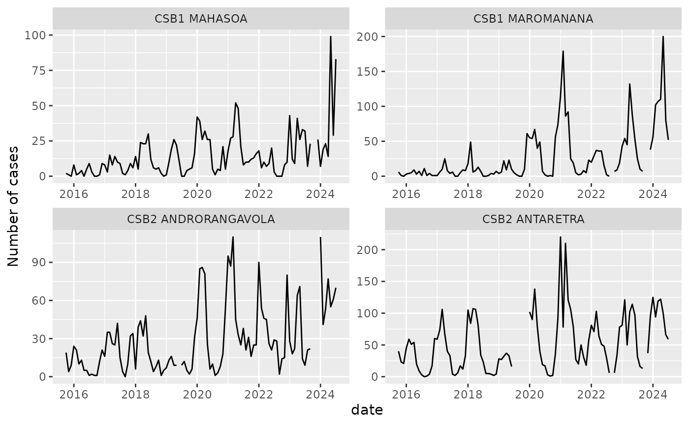

PRIDEC
PRIDEC.Rmd
library(PRIDEC)
library(dplyr)
#>
#> Attaching package: 'dplyr'
#> The following objects are masked from 'package:stats':
#>
#> filter, lag
#> The following objects are masked from 'package:base':
#>
#> intersect, setdiff, setequal, union
library(ggplot2)The PRIDE-C package serves to facilitate the forecasting of infectious diseases using data from DHIS2. It follows a workflow of 1. Data processing 2. Model training 3. Forecasting
This demo will illustrate the process of forecasting a disease across multiple organisation units (e.g. administrative zones) three months into the future based on climatic variables.
The demo data
The demo data is simulated malaria case data from Ifanadiana District, Madagascar collected at the level of the health center. It includes information data on monthly case counts, rainfall, temperature, socio-economic levels, elevation, mosquito net use, and geographic isolation.
Generally, the value we want to predict is referred to as the
y_var in the API calls, while the predictor variables are
referred to as pred_vars.
It includes an associated dataset of spatial polygons representing each health facility catchment.
Below is a plot of the time series for four example health centers.
data("demo_malaria")
data("demo_polygon")
demo_malaria |>
filter(orgUnit %in% sample(unique(orgUnit), 4)) |>
mutate(date = as.Date(paste0(period,"01"), format = "%Y%m%d")) |>
ggplot(aes(x = date, y = n_case)) +
geom_line() +
facet_wrap(~orgUnit, scales = "free") +
ylab("Number of cases")
Data Processing
prep_data()
The first step is to process and clean the data. The PRIDE-C forecasting workflow has four steps to prepare the data for the model:
-
lag predictors: in order to predict into the
future, we must use lagged values of the predictor variables, so that
the number of cases is predicted as a function of the variable at time
t-lag - normalize predictors: all of the predictor variables are centered and scaled to help with model convergence
- Impute missing predictors: missing values in the predictor variables are imputed via a seasonal imputation
- create spatial structure: one of the model fitting approaches (INLA) uses the spatial structure of the data to help predict. This structure is created via a matrix that identifies the neighbors of each polygon.
The data preparation step is done via the prep_data()
function. We will choose to lag all of the dynamic predictor variables
and scale all of the predictor variables.
prep_output <- prep_data(raw_data = demo_malaria,
y_var = "n_case",
lagged_vars = c("pev", "rain_mm", "temp_c"),
scaled_vars = c("pev", "rain_mm", "temp_c",
"wealth_index", "elevation",
"time_to_district"),
lag_n = 3,
graph_poly = demo_polygon)
#> Registered S3 method overwritten by 'quantmod':
#> method from
#> as.zoo.data.frame zooprep_data() returns three elements in a list:
-
W_graph: object containing the spatial structure of data required by INLA -
data_prep: data.frame of the cleaned and processed data -
scale_factors: data.frame of center and scaling factors used to normalize the predictor variables. This will be used when explorign variables later.
split_cv_rolling()
Once the data is prepared, it needs to be split into multiple
cross-validation sets (cv_set). Each cv_set
contains an analysis and assessment dataset
that will be used in model training. These cv_sets are
created via rolling origin splits (Tashman
2000.)
Each cv_set can be thought of as an individual test of
the workflow’s ability to forecast, where a model is fit to the
analysis data following the specified
pred_vars and model parameters and performance is assessed
on the assessment data.Generally, the analysis
data corresponds to a longer period of historical data used for
training, while the assessment data corresponds to the
actual forecast horizon relevant to the user.
We will use 5 years of analysis data to train the model,
and 3 months of assessment data to test it. The function
split_cv_rolling will return a list, where each element
corresponds to one cv_set.
splits_out <- split_cv_rolling(prep_output$data_prep,
month_analysis = 60,
month_assess = 3)We can inspect a cv_set to better understand the
structure of the data:
lapply(splits_out[[24]], head)
#> $analysis
#> # A tibble: 6 × 28
#> orgUnit n_case pev rain_mm temp_c wealth_index elevation LLIN_use csb_type
#> <chr> <int> <dbl> <dbl> <dbl> <dbl> <dbl> <dbl> <chr>
#> 1 CSB1 AMB… 2 14.4 0 22.4 2.53 381. 0.290 CSB1
#> 2 CSB1 AMB… 5 15.4 0.527 24.5 2.53 381. 0.290 CSB1
#> 3 CSB1 AMB… 2 12.7 164. 25.1 2.53 381. 0.290 CSB1
#> 4 CSB1 AMB… 16 15.7 309. 25.8 2.53 381. 0.290 CSB1
#> 5 CSB1 AMB… 29 14.3 289. 25.2 2.53 381. 0.290 CSB1
#> 6 CSB1 AMB… 1 13.8 169. 25.1 2.53 381. 0.290 CSB1
#> # ℹ 19 more variables: time_to_district <dbl>, LLIN_wane <dbl>, period <int>,
#> # date <date>, pev_lag <dbl>, rain_mm_lag <dbl>, temp_c_lag <dbl>,
#> # pevsc <dbl>, pev_lagsc <dbl>, rain_mmsc <dbl>, rain_mm_lagsc <dbl>,
#> # temp_csc <dbl>, temp_c_lagsc <dbl>, wealth_indexsc <dbl>,
#> # elevationsc <dbl>, time_to_districtsc <dbl>, month_season <fct>,
#> # month_num <dbl>, org_ID <int>
#>
#> $assessment
#> # A tibble: 6 × 28
#> orgUnit n_case pev rain_mm temp_c wealth_index elevation LLIN_use csb_type
#> <chr> <int> <dbl> <dbl> <dbl> <dbl> <dbl> <dbl> <chr>
#> 1 CSB1 AMB… 3 17.3 0 21.9 2.53 381. 0.290 CSB1
#> 2 CSB1 AMB… 7 26.5 65.9 25.0 2.53 381. 0.290 CSB1
#> 3 CSB1 AMB… 11 23.1 156. 26.0 2.53 381. 0.290 CSB1
#> 4 CSB1 AMB… 5 13.9 0 20.9 2.82 614. 0.318 CSB1
#> 5 CSB1 AMB… 3 21.3 66.9 24.2 2.82 614. 0.318 CSB1
#> 6 CSB1 AMB… 11 17.3 188. 24.9 2.82 614. 0.318 CSB1
#> # ℹ 19 more variables: time_to_district <dbl>, LLIN_wane <dbl>, period <int>,
#> # date <date>, pev_lag <dbl>, rain_mm_lag <dbl>, temp_c_lag <dbl>,
#> # pevsc <dbl>, pev_lagsc <dbl>, rain_mmsc <dbl>, rain_mm_lagsc <dbl>,
#> # temp_csc <dbl>, temp_c_lagsc <dbl>, wealth_indexsc <dbl>,
#> # elevationsc <dbl>, time_to_districtsc <dbl>, month_season <fct>,
#> # month_num <dbl>, org_ID <int>Model Training
Modeling approaches
There are five modeling approaches built into the PRIDE-C forecasting workflow:
naive
The naive model can be thought of as the null model with which to
compare other forecasting approaches to. It creates forecasts equal to
historical averages based on grouping variables, by default the month of
the year and orgUnit. It does not use any predictor
variables in predictions.
arimax
The ARIMAX model is an ARIMA model fit with exogeneous variables fit
individually to each orgUnit. The exogeneous variables must
be dynamic and at the same temporal resolution at the case data. Each
ARIMAX model is fit using the forecast::auto.arima()
function. Initial models are fit using the full list of provided
pred_vars, which are iteratively removed (beginning at the
end of the list) until a model successfully converges. Data are
log-transformed within the function to help with fitting, but forecasts
are provided on the response-scale.
glm_nb
A generalized linear model with a negative binomial distribution can
be fit to the full dataset. It includes a variable to control for the
orgUnit and month of the year, in addition to the specified
predictor variables. It can be thought of as the naive model with
exogenous predictors. Predictor variables can be either dynamic or
constant within an orgUnit, allowing for the inclusion of
socio-demographic or topographical variables. The model is fit via the
MASS::glm.nb() function.
ranger
A random forest quantile regression model is implemented via the ranger
package. This package was chosen for its ability to apply quantile
regression, its speed, and high-performance with default
hyper-parameters. Three hyper-parameters (m.try,
min.node.size, and num.trees) can be tuned
with the tune_ranger() function. Predictor variables can be
either dynamic or constant within an orgUnit, allowing for
the inclusion of socio-demographic or topographical variables. It
includes a variable to control for the orgUnit and month of
the year, in addition to the specified predictor variables.
inla
An approximate Bayesian model is fit via Integrated Nested Laplace
Approximation via the inla package. Note that
this package is not available on CRAN and should be installed following
these installation
instructions.
This is the most computationally intense model, as it includes both
temporal and spatial random effect structures. The temporal random
effects are included via cyclical random walk with an annual
seasonality, nested within orgUnit. The spatial structure
is defined by a Besag-York-Mollié (BYM) model. This is an autoregressive
spatial model based on the neighborhood spatial structure of the
orgUnits. Priors can be provided for both random effects
via the hyper_priors argument to fit_inla. In
the future, functionality will be added to tune these
hyper-parameters.
Training Workflow
Each modeling approach follows the same training workflow:
-
tune_*: tuning of hyperparameters (rangeronly) -
fit_*: fitting of models to multiplecv_sets -
eval_performance: evaluation of models onanalysisandassessmentdatasets -
inv_variables_*: investigation of variable importance scores and counterfactual plots to visualize the association with predictor variables
This workflow can be launched for multiple approaches at once and
returns a quarto report of model performance and variable
investigation via the train_models function.